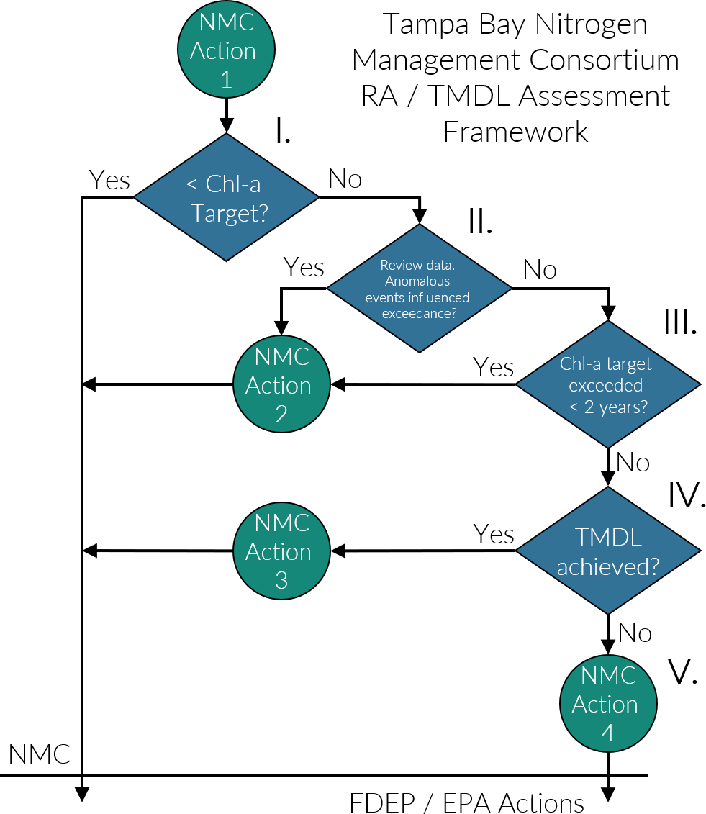

2 2024 Tampa Bay Estuary Nutrient Management Compliance Assessment
On December 22, 2010, then FDEP Secretary Drew signed a Final Order accepting and approving the 2009 Reasonable Assurance Addendum for the Tampa Bay estuary. The final order found that the Nitrogen Management Consortium (NMC) provided FDEP reasonable assurance that: 1) completed and proposed management actions in the 2009 RA Addendum will result in the continued attainment of the estuarine nutrient criteria within Tampa Bay, and 2) compliance with the allocations in the 2009 RA Addendum ensures reasonable progress towards continued attainment of the estuarine nutrient criteria and associated Class III designated uses. Furthermore, the FDEP finalized a WQBEL for the Tampa Bay estuary in accordance with the allocations developed under the 2009 RA Addendum in November 2010. The Consortium completed subsequent RA Updates in 2012, 2017, and 2022 maintaining allocations and expanding upon projects originally defined in the 2002 RA Submittal, 2007 RA Update, 2009 RA Addendum, 2012 RA Update, 2017 RA Update and 2022 RA Update.
As part of the compliance assessment stipulated under the 2009 RA Addendum, the NMC committed to annually assess the water quality and seagrass conditions within Tampa Bay and annually report these to FDEP and EPA. The Consortium’s assessment responsibilities are shown in green in Figure 2.1. It should be noted that the Consortium’s reasonable assurance assessment strategy begins with the observation of water quality conditions in the bay for a particular year. As is recommended in numerous EPA guidance documents for the development of numeric nutrient criteria, the Consortium’s assessment strategy attempts to apply a stressor-response rationale for the determination of nitrogen load allocation reasonable assurance in the estuary.
The framework is applied on a bay-segment basis, and is predicated on assessing annual attainment of the bay segment chlorophyll-a concentration threshold as the initial step. If the bay segment-specific chlorophyll-a threshold is met, the Consortium annually reports the results to FDEP and EPA and additional assessment steps are not required by the Consortium (by June of the following year). If annual average chlorophyll-a thresholds are not met in one or more bay segments, additional assessment steps are required by the Consortium as noted in the framework and assessment process (Figure 2.1, Table 2.1).
Regardless of the assessment results, the Consortium will annually report (by June of the following year) whether the bay segment specific chlorophyll-a thresholds are met using the Environmental Protection Commission of Hillsborough County (EPCHC) dataset, as traditionally assessed using the “Decision Matrix” management strategy developed by the TBEP (Janicki, Wade, and Pribble 2000) and will deliver this to FDEP and EPA (Figure 2.1; NMC Action 1 in the Framework). Additional data from Pinellas and Manatee County are used to determine if chlorophyll thresholds in the Remainder Lower Tampa Bay segment (Boca Ciega Bay South, Terra Ceia Bay, and Manatee River) are met in these areas. If an annual, individual exceedence of a bay segment chlorophyll-a threshold is observed, an addendum report outlining the anomalous event(s) or data which influenced the bay segment chlorophyll-a exceedence will be delivered to FDEP and EPA upon review by NMC participants by September of the following year (Figure 2.1; NMC Action 2 in the Framework). An evaluation of the bay segment assimilative capacity (i.e. revision to the federally-recognized TMDL) is formally considered (if not already considered by the NMC) when bay segment chlorophyll-a thresholds are not met in 2 concurrent years, and hydrologically normalized loads for those years meet the federally-recognized TMDL (Figure 2.1; NMC Action 3 in the Framework). This was the case for the Old Tampa Bay segment during the 2019-2021 period and an assimilative capacity assessment is being conducted in 2024. Alternatively, when bay segment chlorophyll-a thresholds are not met in 2 concurrent years and hydrologically normalized loads for those years also do not meet the federally-recognized TMDL, the Consortium will deliver a full loading report to FDEP and EPA comparing the observed, combined entity/source annual or multiple year loadings to the sources’ 5-yr annual average allocation by September of the following year. This report will identify any exceedences among combined entity/source load categories after taking into consideration “set allocation” sources and hydrologically-normalized sources, and if necessary, whether exceedences were observed for individual MS4 or unpermitted (LA) sources (Figure 2.1; NMC Action 4 in the Framework). It is noted that FDEP will independently assess individual entities for compliance with their allocations.
Assessment Step | Result | Action |
I. Determine annual bay segment specific chlorophyll-a FDEP threshold attainment as traditionally assessed using the Decision Matrix management strategy developed by the TBEP (Janicki, Wade, and Pribble 2000). | Yes | NMC Action 1 |
No | NMC Action 1 | |
II. Review data and determine if an anomalous event(s) influenced non-attainment of the bay segment specific chlorophyll-a threshold. | Yes | NMC Action 2 |
No | Go to III | |
III. Determine if the chlorophyll-a thresholds have been exceeded for <2 consecutive years. | Yes | NMC Action 2 |
No | Go to IV | |
IV. Determine if the bay segment specific federally-recognized TMDL has been achieved using the hydrologically-adjusted compliance assessment outlined in NMC Decision Memo #11 (Appendix 2-11). | Yes | NMC Action 3 |
No | Go to V | |
V. For a given year or for multiple years, compile and report entity-specific combined source loads in comparison to 5-yr annual average reasonable assurance allocation. | Compile & Report | NMC Action 4 |
NMC actions outlined in Figure 2.1 and Table 2.1 performed during RA Implementation Period (2022-2026) are as follows:
NMC Action 1 - | A report assessing attainment of bay segment specific chlorophyll-a thresholds using the EPCHC dataset, as traditionally assessed using the Decision Matrix management strategy developed by the TBEP (Janicki, Wade, and Pribble 2000) will be delivered to FDEP and EPA (this report). |
NMC Action 2 - | A report of the anomalous event(s) or data which influenced the bay segment chlorophyll-a exceedence will be delivered to FDEP and EPA, upon review by NMC participants (this report). |
NMC Action 3 - | Consider re-evaluation of the bay segment assimilative capacity based on nonattainment of bay segment chlorophyll-a threshold while meeting federally-recognized TMDL. |
NMC Action 4 - | If federally-recognized TMDL not achieved, compile results of hydrologic evaluation for FDEP’s review and identify potential further actions needed to achieve reasonable assurance for bay segment allocations. |